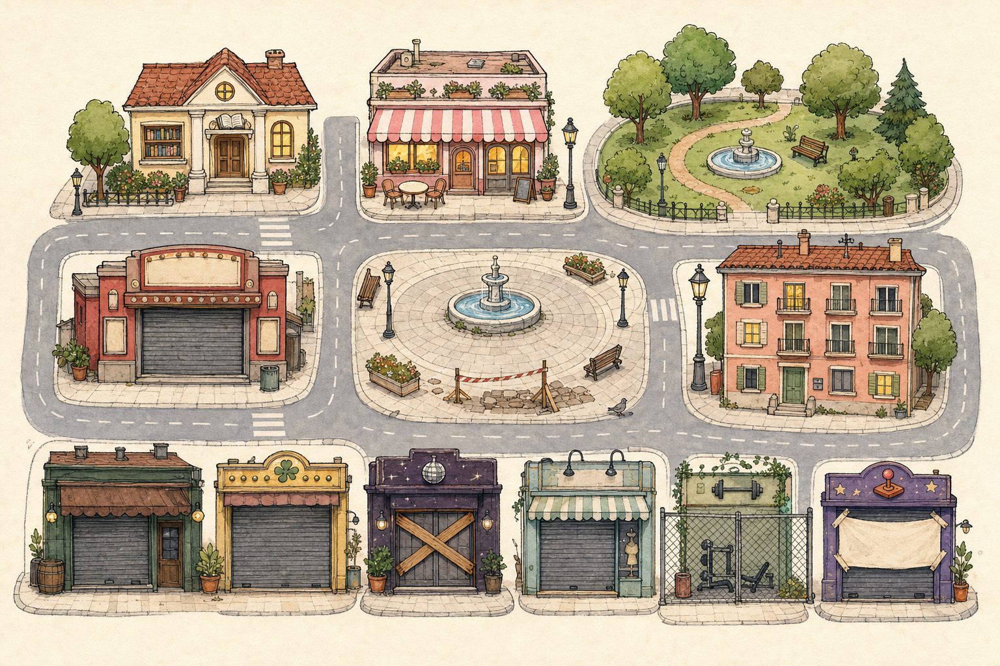

Pantalla principal · Aquí Hay Tema · cuando Neni diga sí a este diseño, se produce esto. No PLAY. No motor.
Referencia viva de tono y perspectiva: img/pueblo-tablero.png
Pseudo-isométrica suave (3/4 de maqueta). Se ve fachada + tejado + un costado. Las piezas se plantan sobre un plano de calles casi cenital.
Referencias relativas. No son mm de producción; sí la proporción que hay que respetar.
| Pieza | PC (~tablero 1280 px de ancho) | Móvil |
|---|---|---|
| Edificio medio (cafetería) | frente ~180–220 px (2–3 unidades de 16) | el mismo dibujo, el mapa se recorre |
| Token de cabeza | 56 px ø | 44 px ø |
| Cabeza vs edificio | ~mitad de una puerta de planta baja. No tapa la fachada. Se clava en acera/terraza, no en el tejado. | |
| Corazón HUD | 78 px de alto | 56 px |
| Ticket dinero / buzón | más pequeños que el corazón | compactos, una sola fila |
Tablero de trabajo: 16:9, cuadrícula 16×10 (A–J / 1–16). Bloque A = un edificio de 3 plantas, no rejilla de pisos.
Cabeza circular (token / chincheta). No busto, no mini-ficha flotante, no retrato rectangular.
C3 prepara tokens. No se tocan los PNG originales.
assets/personajes/tokens/ (un PNG por id, p. ej. P042.png).Ilustración de maqueta con volumen ligero (la misma 3/4), textura papel, trazo visible, pasteles. Conviven con tokens circulares de tinta. No son iconos planos de app ni renders 3D.
Preferimos no multiplicar PNG.
| Estado | Cómo |
|---|---|
| Abierto | PNG del edificio vivo (ventanas con luz si toca). |
| Bloqueado / aún no desbloqueado | Segundo PNG del mismo edificio dormido (persiana, valla, tablones…). Es arquitectura, no un icono suelto. |
| Cerrado por horario | El PNG abierto + overlay CSS (más oscuro) + candado/luna reutilizable. Sin tercer edificio. |
| Seleccionado | CSS (anillo / cinta). Cero PNG extra. |
| Con habitantes | Los tokens encima. El edificio no cambia. |
| Con encuentro / actividad | Un pin PNG reutilizable sobre el lugar. Un solo asset para todo el pueblo. |
Tope: 2 sprites por lugar (abierto + dormido) + 1 pin + 1 candado, compartidos.
Plaza, fuente y el resto de locales dormidos: después. En V0 la plaza puede ir dibujada en el suelo base.
Lista cerrada. Nada más en V0:
No en V0: bocadillos, chincheta física aparte (el token ya es la chincheta), fama, iconos de resumen, tira de parejas.
A en dirección, B en código. El look, la perspectiva, la escala y esta ficha se traducen a PLAY. El HTML de design/prototipo-pantalla-principal/ no se pega encima de play.php: se rehace sobre el PLAY de Carlos I cuando Neni + ChatGPT lo pidan.
